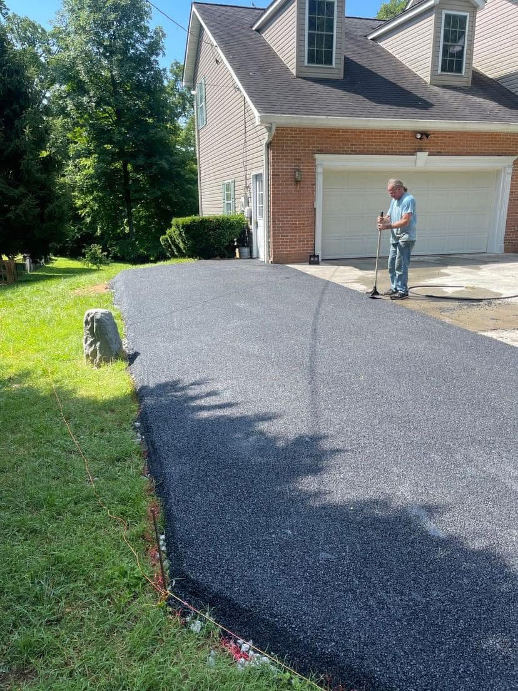

Paving near Chambersburg, Pennsylvania

A+ Paving & Landscaping already lists the Chambersburg area and Franklin County, Pennsylvania, as the secondary service area north of the Eastern Panhandle, including communities around Chambersburg, Waynesboro, and Greencastle. This page does not add a Pennsylvania office or a new license. The business facts stay the ones already published for Gerrardstown. Call and confirm we can reach your address before you plan a date.
The ground does not change at the state line. The Great Valley continues north with clay-rich soils over limestone, and the same freeze-thaw cycle opens cracks that took on water. A drive still needs a shape that sheds water and a stone base under the asphalt or tar and chip. Driveway paving, sealcoating, and parking lots are the same services. Sealcoating still wants a dry day in late summer or early fall, with the air above 50°F while the coat cures. That is general timing, not a township rule.
Before an apron ties into a public road, check with Franklin County or the borough or township, and with your HOA. We are not listing a Pennsylvania permit fee. Waynesboro and Greencastle stay inside this Chambersburg-area page because that is how the service area page already groups them. They do not have separate pages. Contact us with the town and we will say whether the trip makes sense.